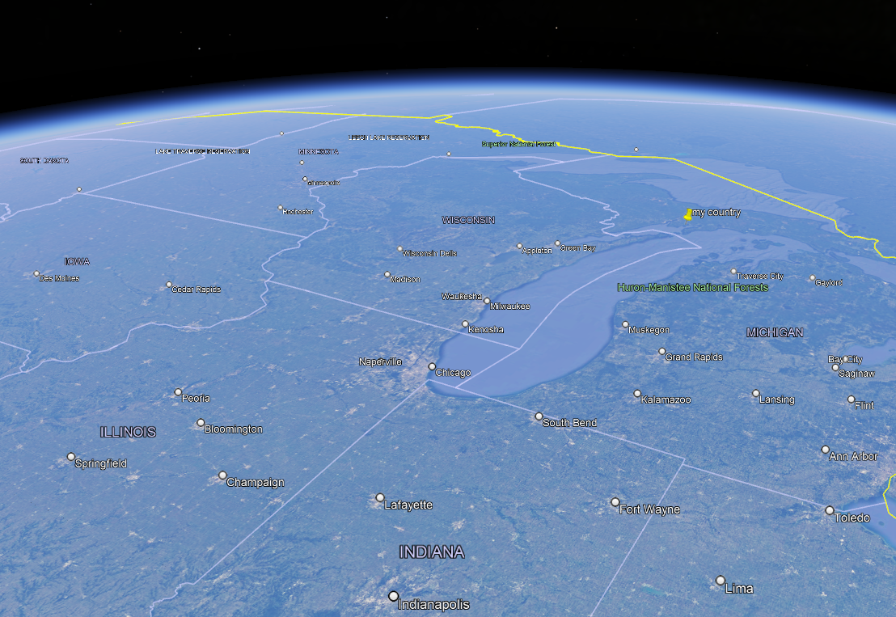
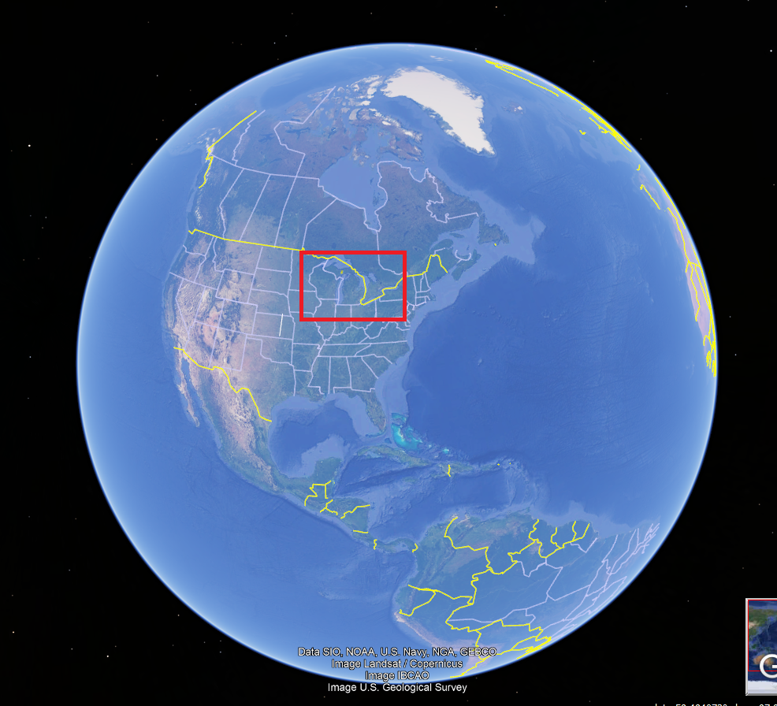

Scale. Space is big. Large even. Ok. I already got it across that it's fucking massive, but what does that mean?
Alright, so numbers mean nothing to you. good point, I don't like them either. OooOh LoOoK ItS TeN BiLlIoN BiLlIoN LIgHtYeaRs I mOsT CeRtaINly DiDn'T jUsT LosE EvErYtHiNg WhEn YoU SaiD ThAT
So, how big is the Universe?
Let's start small. How big is your computer monitor. Well fuck if I know but you've probably got a good idea of it.
I'd say more than likely it's about a 20th the width of your bedroom. Viewing on mobile? Your screen's probably like 1 100th the width of the bedroom.
So that's what a hundredth of something is. Pretty small in comparison?
Your house. You probably have an ok decent idea of that, right? It's like your room, but cubed or something. It's a bit big.
How big then, can life be?
Life, at it's largest, appears to be a Whale, as far as Earth goes. They're pretty fucking big. The biggest one's probably like twice the size of your house.
So, how much of the world is a whale?
Let's say, for extremely cruel purposes, we stretch the whale out into a cube of about 15 meters. How big is that?

Well, to you, it's pretty big, but, to the city of chicago, it would be about 0.00398315391% of all landmass in that city.
NO! NOT NUMBERS! I HATE NUMBERS!
Okay, well, how does four thousandths sound? Small, but not too small to imagine. Imagine the width of a hair compared to the length of the 2nd segment in your middle finger. Not terrible, but that's the size of the whale cube.
Well that's bearable. How big is Chicago to say, Earth?
Woah. Feel it now? Take a piece of hair and put it on your finger. That finger segment is equal to that little grey spot by lake michigan! And that hair is the whale cube!
So by now the world probably feels a whole lot smaller, but that's just a bit deceiving. Viewing Earth from that angle makes it seem a bit smaller than it is.
So, Chicago isn't as big as you thought, but still, it's good in comparison to the face of the Earth here.
You might as well lay your middle finger on your bed and the ratio of middle finger:bed will be about as much as Chicago:hemisphere here.